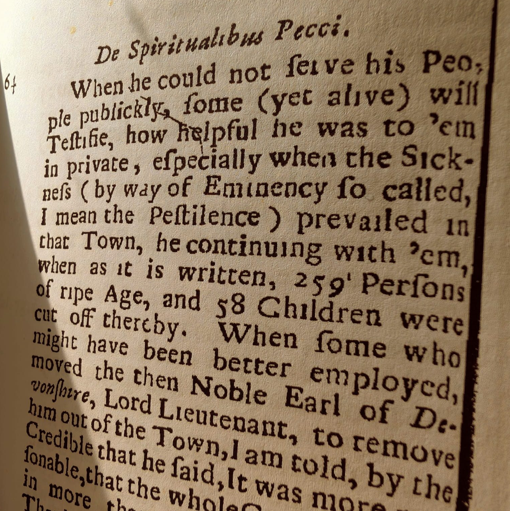

Travel & Directions
Eyam Hall sits in the historic village of Eyam in the Peak District.
Eyam, Hope Valley,
Derbyshire, S32 5QW
Eyam is easily reached from the M1 (junction 29) and A623. Please allow extra time for the scenic country roads. The hall is opposite the village green in the middle of Eyam, through the black iron gates.
You'll find our car park opposite the main entrance to Eyam Hall, reserved for our guests. It opens around an hour before the ceremony and has space for around 40 cars. It's available for the full day and overnight, so you're welcome to leave your car and collect it the next day if you'd rather not drive home. Please note there is strictly no parking behind the hall without the venue's authorisation.
Find Us
Bus services run from Sheffield and Bakewell to Eyam.
The nearest railway stations are Grindleford and Hathersage, both on the Sheffield–Manchester line. Local buses connect the surrounding towns to Eyam village. There's no Uber or ride-hailing out in the Peaks, so please pre-book a taxi for around midnight.

The Village of Eyam
Eyam is known as England's “plague village”. In 1665–66 an outbreak of bubonic plague swept through, and the village famously chose to quarantine itself to stop it spreading further afield. The earliest surviving account comes from William Bagshaw (1628–1702), the “Apostle of the Peak”, whose 1702 book De Spiritualibus Pecci describes how the minister Thomas Stanley stayed on privately to help the town through it. Bagshaw put the toll at 259 adults and 58 children — modern research puts the total closer to 260.